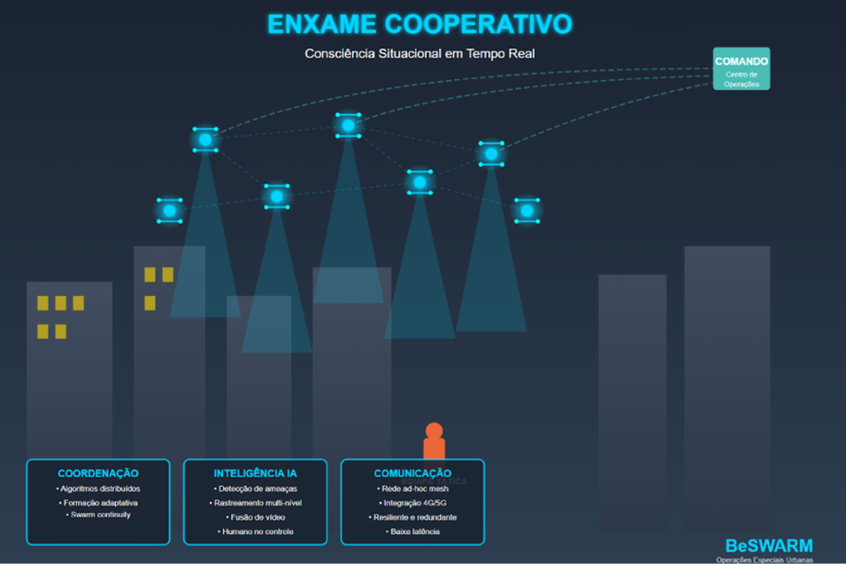

Enxames de Drones em Operações Especiais Urbanas de Segurança Pública
Whitepaper: Nossa solução para consciência situacional em tempo real

Operações táticas em ambientes urbanos enfrentam um problema fundamental: equipes especializadas operam muitas vezes às cegas. Vielas estreitas, múltiplos níveis de edificações, alta densidade de obstáculos e civis em movimento constante criam um cenário onde a consciência situacional é fragmentada e as decisões precisam ser tomadas com informação incompleta.
Nossa solução muda radicalmente essa equação. Enxames cooperativos de microdrones, dezenas de aeronaves autônomas coordenadas por algoritmos distribuídos, criam uma camada de inteligência aérea em tempo real que transforma operações especiais. Damos às forças táticas o que elas nunca tiveram: visão ampliada, de forma contínua e resiliente do teatro de operações, com IA detectando e rastreando ameaças potenciais, sempre mantendo humanos no controle das decisões críticas.
Cada operação especial em área urbana complexa enfrenta os mesmos desafios estruturais:
Equipes não conseguem ver além de obstáculos e edificações que cercam a área de operação.
Múltiplos pontos de risco surgem e se deslocam em cenários urbanos densos.
Presença constante de civis aumenta a complexidade das decisões e riscos colaterais.
Múltiplas equipes precisam agir em sincronia com informação limitada e em tempo real.
O resultado? Comandantes decidem com informação incompleta. Agentes de segurança se expõem desnecessariamente. Civis correm mais risco. Operações demoram mais e custam mais, em todos os sentidos.
Drones individuais pilotados manualmente já são realidade, mas para operações especiais em cenários de alta complexidade, as limitações são críticas. Enxames mudam tudo.
Múltiplos drones pequenos, distribuídos e cooperativos não apenas cobrem mais área — eles criam um tipo fundamentalmente diferente de consciência situacional.
Sem ponto único de falha: um drone abatido ou com perda de sinal não significa perda de visão do setor inteiro.
Detecção e rastreamento de ameaças por inteligência artificial, sempre mantendo humanos no controle das decisões críticas.
Sem necessidade de pilotos dedicados por aeronave. O enxame se auto-coordena para manter cobertura ótima.
Entre em contato para saber mais sobre como nossa tecnologia pode transformar operações de segurança pública.
Entre em Contato